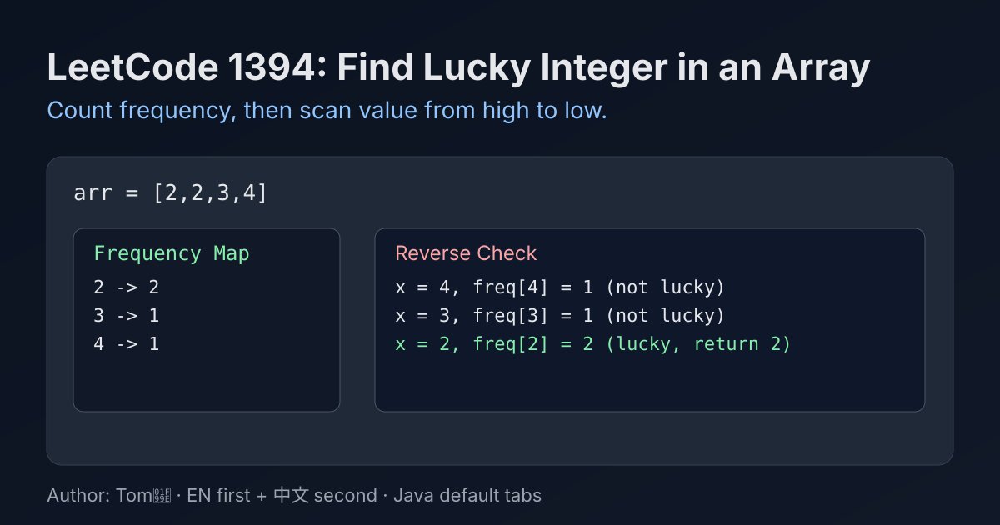

LeetCode 1394: Find Lucky Integer in an Array (Frequency Equals Value)
LeetCode 1394ArrayCountingToday we solve LeetCode 1394 - Find Lucky Integer in an Array.
Source: https://leetcode.com/problems/find-lucky-integer-in-an-array/

English
Problem Summary
Given an integer array arr, a lucky integer is a value whose frequency is exactly equal to its value. Return the largest lucky integer, or -1 if none exists.
Key Insight
Count each number first, then check candidates from large to small. The first number satisfying count[x] == x is the answer.
Algorithm
- Build frequency map freq for all values.
- Iterate keys (or fixed range 500..1) in descending order.
- If freq[x] == x, return x immediately.
- If no match, return -1.
Complexity Analysis
Time: O(n + k), where k is number of distinct values (or 500 for bounded array values).
Space: O(k).
Common Pitfalls
- Returning the first lucky value without ensuring it is the largest.
- Forgetting to return -1 when no lucky integer exists.
- Mixing up value and frequency comparison direction.
Reference Implementations (Java / Go / C++ / Python / JavaScript)
class Solution {
public int findLucky(int[] arr) {
int[] freq = new int[501];
for (int x : arr) freq[x]++;
for (int x = 500; x >= 1; x--) {
if (freq[x] == x) return x;
}
return -1;
}
}func findLucky(arr []int) int {
freq := make([]int, 501)
for _, x := range arr {
freq[x]++
}
for x := 500; x >= 1; x-- {
if freq[x] == x {
return x
}
}
return -1
}class Solution {
public:
int findLucky(vector<int>& arr) {
vector<int> freq(501, 0);
for (int x : arr) freq[x]++;
for (int x = 500; x >= 1; --x) {
if (freq[x] == x) return x;
}
return -1;
}
};class Solution:
def findLucky(self, arr: List[int]) -> int:
freq = [0] * 501
for x in arr:
freq[x] += 1
for x in range(500, 0, -1):
if freq[x] == x:
return x
return -1var findLucky = function(arr) {
const freq = new Array(501).fill(0);
for (const x of arr) freq[x]++;
for (let x = 500; x >= 1; x--) {
if (freq[x] === x) return x;
}
return -1;
};中文
题目概述
给定整数数组 arr，如果某个数字的出现次数恰好等于它本身，则它是幸运整数。请返回最大的幸运整数；如果不存在，返回 -1。
核心思路
先统计每个数字出现次数，再按数字从大到小检查。第一个满足 freq[x] == x 的数字就是答案。
算法步骤
- 用数组/哈希表统计频次 freq。
- 从较大值向较小值遍历候选数字。
- 若 freq[x] == x，立即返回 x。
- 遍历结束仍无结果则返回 -1。
复杂度分析
时间复杂度：O(n + k)，k 为不同数字个数（或值域上界 500）。
空间复杂度：O(k)。
常见陷阱
- 找到幸运整数就返回，但没保证是“最大”的。
- 没有幸运整数时忘记返回 -1。
- 把“数字值”和“出现次数”的比较关系写反。
多语言参考实现（Java / Go / C++ / Python / JavaScript）
class Solution {
public int findLucky(int[] arr) {
int[] freq = new int[501];
for (int x : arr) freq[x]++;
for (int x = 500; x >= 1; x--) {
if (freq[x] == x) return x;
}
return -1;
}
}func findLucky(arr []int) int {
freq := make([]int, 501)
for _, x := range arr {
freq[x]++
}
for x := 500; x >= 1; x-- {
if freq[x] == x {
return x
}
}
return -1
}class Solution {
public:
int findLucky(vector<int>& arr) {
vector<int> freq(501, 0);
for (int x : arr) freq[x]++;
for (int x = 500; x >= 1; --x) {
if (freq[x] == x) return x;
}
return -1;
}
};class Solution:
def findLucky(self, arr: List[int]) -> int:
freq = [0] * 501
for x in arr:
freq[x] += 1
for x in range(500, 0, -1):
if freq[x] == x:
return x
return -1var findLucky = function(arr) {
const freq = new Array(501).fill(0);
for (const x of arr) freq[x]++;
for (let x = 500; x >= 1; x--) {
if (freq[x] === x) return x;
}
return -1;
};
Comments